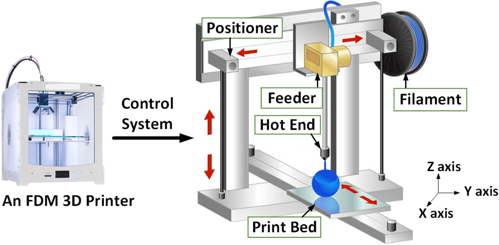

3D Printing is very useful and commonly used today for prototyping which is relevant to what we are learning now. It is more eco-friendly because you will use less material to produce what you need instead of cutting from a piece of wood and throwing the rest away for example. It is also one of the fastest methods to produce a prototype (just a few hours to print) to show someone.
Sometimes, we need support when 3D-Printing, which can be removed later either manually or melting away in liquid. If we print without supports, the horizontal parts will be okay but the vertical parts (especially those at 45 degrees) will overhang and cause material to build up.
There is a minimum thickness as the nozzle of the 3d printer is 0.4mm and if the wall is too thin, the wall will break. Having a thicker wall can make it stronger. We try to go for 1.2mm wall thickness as the minimum when printing.
When designing, we try to use the minimum amount of infill to design a product as having it 100% solid for example, will waste more material and it slows down the production time as the printer has to fill every space.
It is important to plan out when you want to 3D-print something instead of going to the lab at the last minute. The printing will take a few hours so we should always arrive early and anticipate a queue, allowing extra time for that.
This is a typical 3D-printer:

It includes the print display, extruder, hot end, cooling fan, filament and print bed. The print bed can be heated up to 100 degrees but is usually set to 60. We should never touch the hot end and the print bed during and immediately after printing as it will be hot.
We will start with creating the model of the product on the software (fusion 360, autodesk, etc). We will then
For this module, we are using the software CURA for 3D-printing. It is an opensource software available for download online.
Thingiverse is a site where you can browse and download various 3D models created by others. You can download the STL file and use it to 3D-print the design.